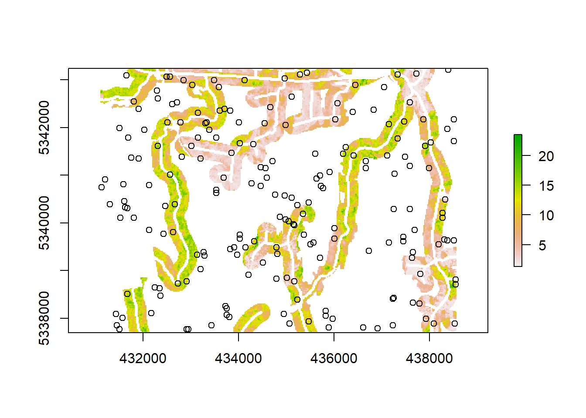

Principle Components
The first method we outline is using principle components analysis and sample selection from the (it 2021) package. This vignette is mostly replicated from the one within that package by Martin Queinnec.

We can check the proportion of variance contained in each principal component:
## Importance of components:
## Comp.1 Comp.2 Comp.3 Comp.4 Comp.5
## Standard deviation 2.983183 1.2064618 1.13300103 0.85484659 0.51901897
## Proportion of Variance 0.684568 0.1119654 0.09874549 0.05621252 0.02072159
## Cumulative Proportion 0.684568 0.7965334 0.89527885 0.95149136 0.97221296
## Comp.6 Comp.7 Comp.8 Comp.9
## Standard deviation 0.41358876 0.325794942 0.21689690 0.140456117
## Proportion of Variance 0.01315813 0.008164796 0.00361879 0.001517532
## Cumulative Proportion 0.98537108 0.993535880 0.99715467 0.998672202
## Comp.10 Comp.11 Comp.12 Comp.13
## Standard deviation 0.0969461455 0.0732846305 0.0427731550 2.574170e-02
## Proportion of Variance 0.0007229658 0.0004131259 0.0001407341 5.097195e-05
## Cumulative Proportion 0.9993951681 0.9998082940 0.9999490281 1.000000e+00Use PCA model to get PCA values of an existing set of plots
A network of 182 plots was already established in RMF. The objective of the structural guided sampling was to check if the existing plot network was covering the entire range of structural variability and if not, selecting new plots in underrepresented forest types.
We load the existing set of plots. All the ALS metrics that were calculated to make the PCA model have also been calculated at the plot-level.
Note: Make sure that the name of metrics used to get the PCA model correspond to the name of the plot-level metrics
We can use the predict function to get PCA values of the existing set of plots and off the candidate cells
## Reading layer `plots_metrics' from data source `G:\Programs\R-4.0.3\library\RMFinventory\extdata\plots_metrics.shp' using driver `ESRI Shapefile'
## Simple feature collection with 5 features and 14 fields
## geometry type: POINT
## dimension: XY
## bbox: xmin: 432109.8 ymin: 5337921 xmax: 437372.2 ymax: 5342820
## projected CRS: UTM_Zone_17_Northern_HemisphereOnce PCA values of all forested cells, candidate cells and existing plots have been calculated, it is useful to plot them to visualize their distribution.

Stratification
Once PCA values have been calculated we can stratify the PC1 / PC2 feature space. The approach chosen for the RMF was to stratify using equal intervals.
From the previous plot, we can decide to stratify the feature space into 7 equal interval on the PC1 axis and 5 intervals on the PC2 axis (7 x 5 grid). We can use the function getPCAstrata to automatically create the stratification:
## class : RasterLayer
## dimensions : 277, 373, 103321 (nrow, ncol, ncell)
## resolution : 20, 20 (x, y)
## extent : 431100, 438560, 5337700, 5343240 (xmin, xmax, ymin, ymax)
## crs : +proj=utm +zone=17 +ellps=GRS80 +units=m +no_defs
## source : memory
## names : strata
## values : 12, 75 (min, max)
## $PC1
## [1] -5.3840455 -3.4519431 -1.5198408 0.4122616 2.3443639 4.2764663 6.2085686
## [8] 8.1406710
##
## $PC2
## [1] -4.1297172 -1.8145574 0.5006024 2.8157622 5.1309220 7.4460818## # A tibble: 35 x 3
## strata count frac
## <ord> <dbl> <dbl>
## 1 11 0 0
## 2 12 5467 0.183
## 3 13 130 0.00435
## 4 14 0 0
## 5 15 0 0
## 6 21 0 0
## 7 22 3183 0.106
## 8 23 1619 0.0541
## 9 24 0 0
## 10 25 0 0
## # ... with 25 more rows## [,1] [,2] [,3] [,4] [,5] [,6] [,7]
## [1,] 11 21 31 41 51 61 71
## [2,] 12 22 32 42 52 62 72
## [3,] 13 23 33 43 53 63 73
## [4,] 14 24 34 44 54 64 74
## [5,] 15 25 35 45 55 65 75We can use the breaks returned by the getPCAstrata function to get the strata of the existing set of plots:
## [1] 42 12 54 52 54
## 35 Levels: 11 < 12 < 13 < 14 < 15 < 21 < 22 < 23 < 24 < 25 < 31 < 32 < ... < 75## # A tibble: 35 x 3
## strata count frac
## <ord> <dbl> <dbl>
## 1 11 0 0
## 2 12 1 0.2
## 3 13 0 0
## 4 14 0 0
## 5 15 0 0
## 6 21 0 0
## 7 22 0 0
## 8 23 0 0
## 9 24 0 0
## 10 25 0 0
## # ... with 25 more rowsMake a new plots with break lines between strata

Select new plots
The function sampleCells that performs the sampling requires the number of cells to sample for each strata. This can be determined based on the previous feature space plots, total number of plots than can be selected, number of existing plots, how many of them should be re-measured etc.
The following figure illustrates the sampling process:

Figure 1: Sampling process diagram
## strata toSample
## 1 13 1
## 2 14 2
## 3 22 1
## 4 23 3
## 5 24 3
## 6 25 0
## 7 31 1
## 8 32 1
## 9 33 5
## 10 34 3
## 11 35 0
## 12 41 1
## 13 42 2
## 14 43 5
## 15 44 3
## 16 45 1
## 17 51 1
## 18 52 2
## 19 53 4
## 20 54 5
## 21 55 2
## 22 61 0
## 23 62 1
## 24 63 2
## 25 64 2
## 26 65 2
## 27 72 0
## 28 73 1
## 29 74 1
## 30 75 0## plotID x y strata
## 1 1 432109.8 5340150 42
## 2 2 434310.2 5342820 12
## 3 3 435506.5 5340228 54
## 4 4 435478.0 5337921 52
## 5 5 437372.2 5342478 54## x y strata cluster type plotID
## 1 438450.0 5339210 13 cluster extended New NA
## 2 438230.0 5339710 22 cluster New NA
## 3 438490.0 5339010 23 cluster New NA
## 4 435350.0 5338630 23 cluster New NA
## 5 434530.0 5339410 23 cluster New NA
## 6 437990.0 5341250 32 cluster New NA
## 7 434970.0 5339230 33 cluster extended New NA
## 8 435430.0 5340070 33 cluster extended New NA
## 9 438030.0 5338830 33 cluster extended New NA
## 10 433410.0 5342950 33 cluster extended New NA
## 11 432570.0 5339090 33 cluster extended New NA
## 12 434390.0 5339190 34 isolated New NA
## 13 435110.0 5339610 34 isolated New NA
## 14 437490.0 5342910 34 isolated New NA
## 15 433410.0 5342550 41 cluster extended New NA
## 16 432109.8 5340150 42 <NA> Existing 1
## 111 436490.0 5341690 42 cluster New NA
## 121 433450.0 5342030 42 cluster New NA
## 17 438250.0 5341310 43 cluster extended New NA
## 21 437250.0 5342150 43 cluster extended New NA
## 31 431230.0 5342710 43 cluster extended New NA
## 41 438370.0 5341070 43 cluster extended New NA
## 51 438290.0 5337930 43 cluster extended New NA
## 18 435030.0 5338950 44 isolated New NA
## 22 437410.0 5342590 44 isolated New NA
## 32 434390.0 5339510 44 isolated New NA
## 19 432510.0 5338850 51 cluster New NA
## 42 435478.0 5337921 52 <NA> Existing 4
## 110 436230.0 5341430 52 cluster New NA
## 112 432850.0 5340310 52 cluster New NA
## 113 431550.0 5342730 53 cluster New NA
## 23 432190.0 5343210 53 cluster New NA
## 33 433070.0 5339410 53 cluster extended New NA
## 43 434330.0 5342950 53 cluster extended New NA
## 34 435506.5 5340228 54 <NA> Existing 3
## 52 437372.2 5342478 54 <NA> Existing 5
## 114 432990.0 5339110 54 cluster extended New NA
## 115 437190.0 5342170 54 cluster extended New NA
## 122 437290.0 5342350 54 cluster extended New NA
## 131 438390.0 5340810 54 cluster extended New NA
## 141 432830.0 5338950 54 cluster extended New NA
## 116 437290.0 5342430 55 cluster extended New NA
## 24 435470.0 5340290 55 cluster extended New NA
## 117 438330.0 5341010 62 cluster extended New NA
## 118 431890.0 5338510 63 cluster extended New NA
## 25 432730.0 5340070 63 cluster extended New NA
## 119 432990.0 5339590 64 cluster extended New NA
## 26 438150.0 5341910 64 cluster extended New NA
## 120 437310.0 5342410 65 cluster extended New NA
## 27 437950.0 5341590 65 cluster extended New NA
## 123 432710.0 5341030 73 cluster extended New NA
## 124 438450.0 5338710 74 cluster extended New NA

References
it, Who wrote. 2021. RMFinventory: What the Package Does (Title Case).